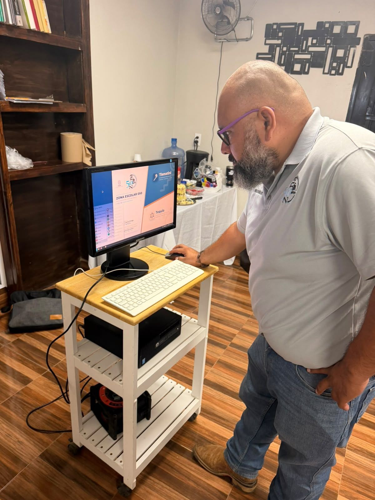
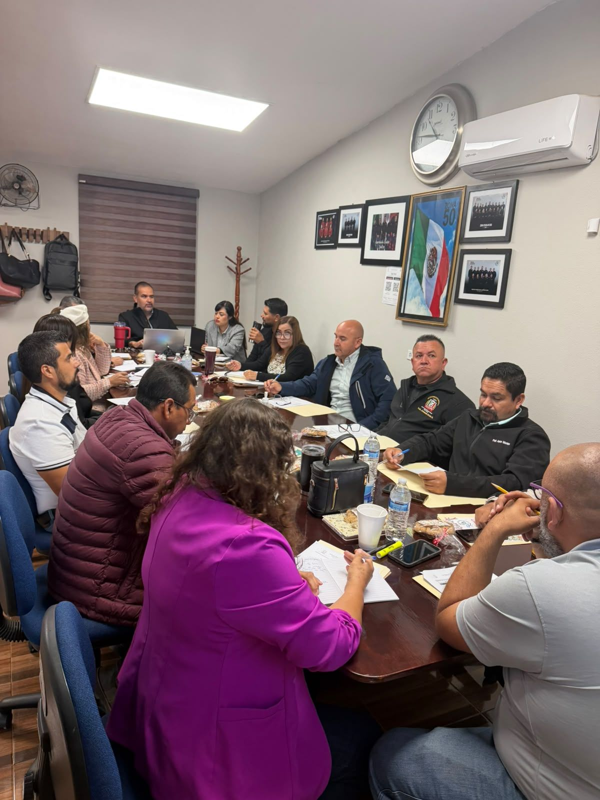
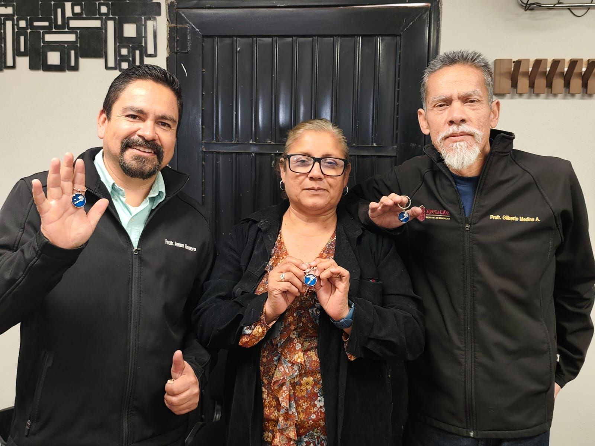
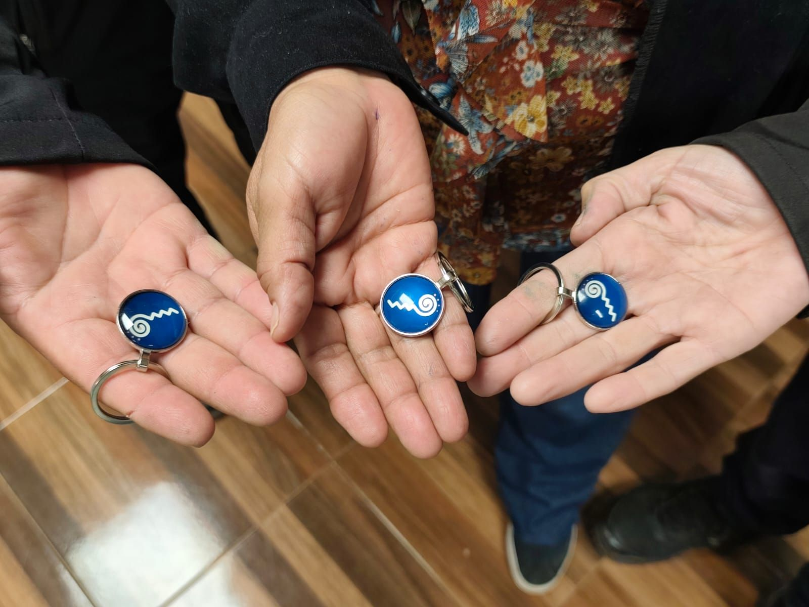

Zona Escolar 050
Zona Escolar 050El miércoles 25 de noviembre, directoras, directores y encargados de despacho de las escuelas de la Zona Escolar 050 se reunieron en las instalaciones de la Supervisión, en Camalú, para la tercera sesión del Consejo Técnico de Zona. El tema que más interés despertó fue el proyecto para recuperar las computadoras que las escuelas ya daban por perdidas.
Una segunda vida para equipos que iban a la basura
En muchas escuelas hay computadoras guardadas porque ya no funcionan bien: equipos con Windows 7, poca memoria o procesadores de hace más de diez años. La Mesa Técnica de la Supervisión desarrolló un software que las convierte otra vez en herramientas útiles para el aula.
Durante la sesión se mostró funcionando una computadora HP de escritorio que se preparó ese mismo día. Al encenderla aparece el escritorio de la Zona Escolar 050 con las plataformas de la zona listas para usarse.


Qué tiene cada computadora
Cuenta Alumno
Pantalla «Aula Zona 050» con programas educativos de matemáticas, lectura, dibujo, geografía, mecanografía y un planetario, además de juegos de Educación Física para los días de mal tiempo. Se limpia sola al terminar cada sesión.
Cuenta Maestro
Acceso protegido con clave a Tlamatini y Tequio, programas de oficina compatibles con Word, Excel y PowerPoint, herramientas para ver, llenar y firmar PDF, y la impresora de la dirección en red.
Sin internet
Una biblioteca digital con contenidos educativos en español y un ajedrez para que los alumnos jueguen entre computadoras de la misma escuela. En los equipos con espacio suficiente se instala también la Wikipedia en español.
Que funcionen sin internet es lo más importante: varias escuelas de la zona no tienen conexión o la tienen muy limitada. Las computadoras se conectan solo para prepararlas y después trabajan en la red local de la escuela.
Cómo llegará a las escuelas
- Cada escuela envía a la Supervisión el inventario de sus computadoras.
- La Supervisión programa los equipos con el software, sin costo para la escuela.
- Las computadoras se instalan en la escuela, una para el maestro y las demás para los alumnos.
Como todo el software es libre, no hay que pagar licencias, y los equipos se aprovechan sin importar su marca.
Otros temas de la sesión
El orden del día incluyó además:
- Ley Daryela: la capacitación obligatoria en perspectiva de género para el personal educativo de Baja California, que se realizará en dos sesiones.
- Orientaciones de la Tercera Sesión Ordinaria del Consejo Técnico Escolar: revisión de lo que trabajarán los colectivos docentes en sus escuelas.
- Programa de Protección Integral Escolar (PPIE): capacitación para directores.
- Segunda Asamblea de Vida Saludable: se llevará a cabo del 30 de noviembre al 4 de diciembre.
- Educación a distancia: la estrategia de la zona.
- Capacitación en Tlamatini: la plataforma de la zona que apoya a los docentes con la planeación y los formatos escolares.
- Inventario de computadoras antiguas: el primer paso para llevar el proyecto de software a cada escuela.
Como recuerdo de la sesión, los directivos recibieron un llavero con el emblema de Tlamatini.


La Supervisión Escolar Zona 050 agradece a los directivos su participación y su disposición para llevar estas herramientas a sus comunidades escolares.